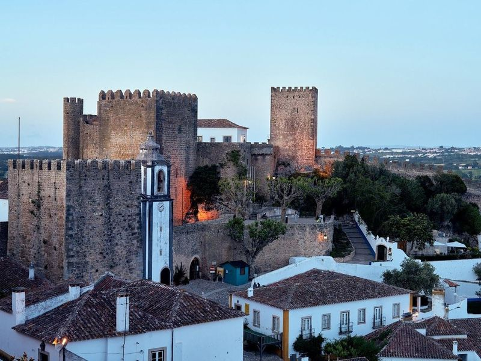
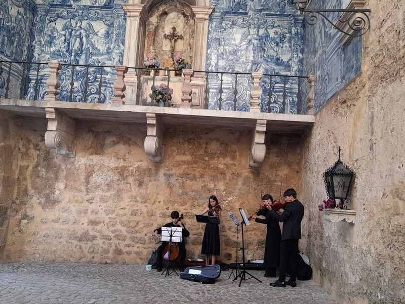
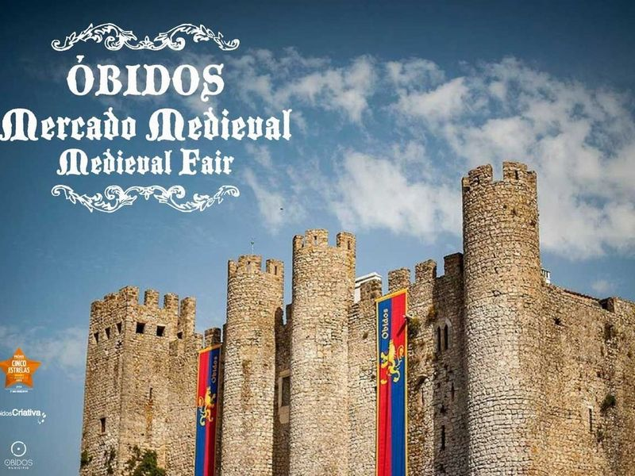
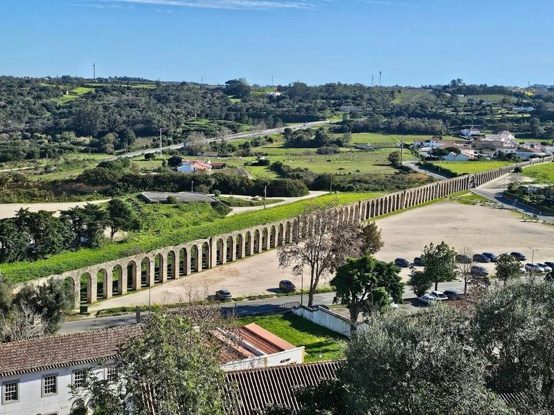
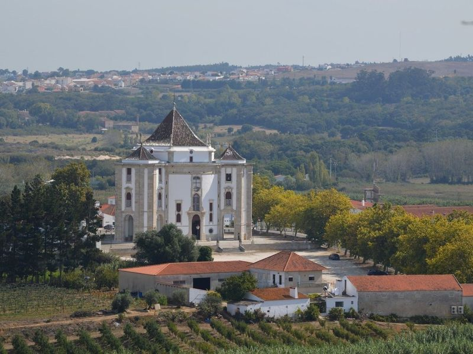
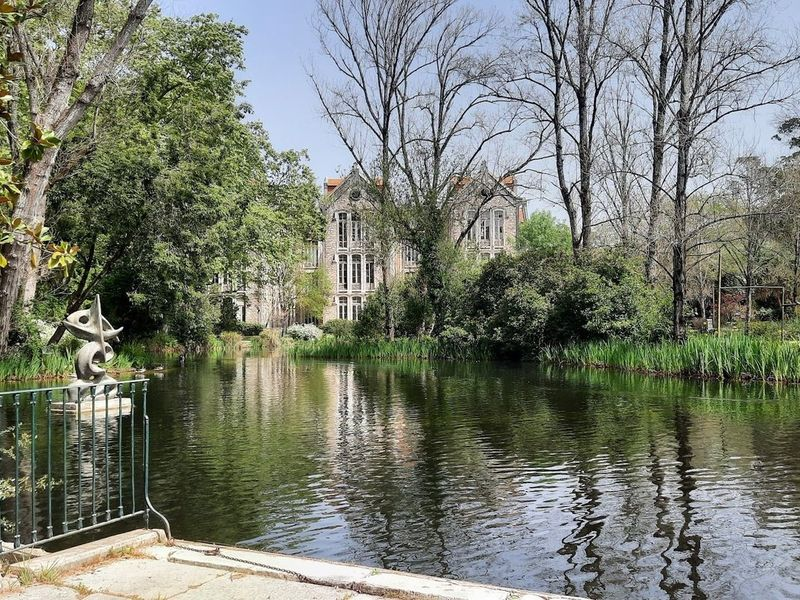
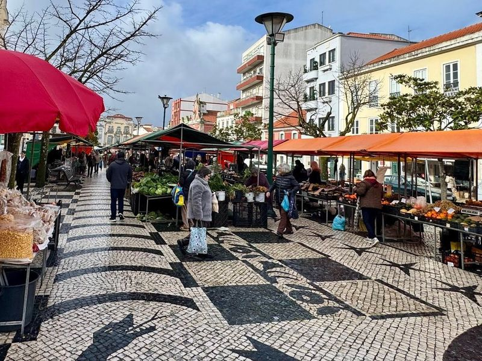
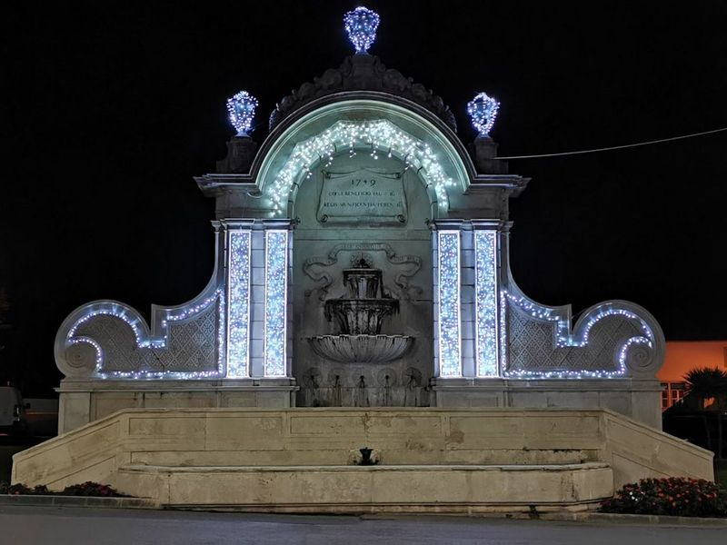
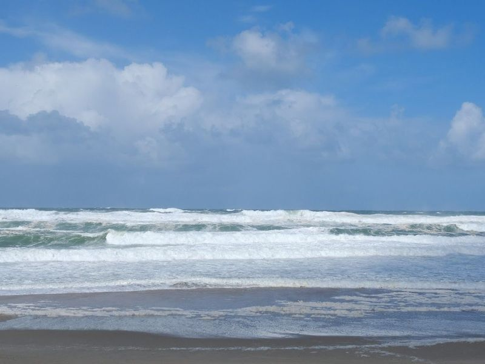
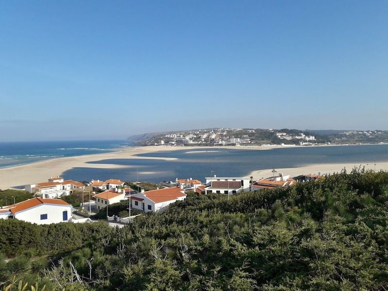

Explore Óbidos
A Brief History
Óbidos was a strategic hilltop settlement gifted by Portuguese kings to their queens from the thirteenth century, which helped preserve its circuit of walls and whitewashed houses. Romans and later Visigoths knew the site before the castle rebuilt under the first dynasty controlled the road between Lisbon and Leiria. Medieval gates, Manueline pelourinho, and baroque churches within the enclosure show how a fortified borough became a literary and festival town without losing its compact plan.
Attractions Map
Top Sights & Activities

Castelo de Óbidos
Castelo de Óbidos is a grand medieval castle with origins dating back to the 9th century. The castle offers hotel rooms for travellers, allowing them to experience a unique stay within its historic walls. From the top of the castle, one can admire the charming streets below, adorned with Moorish roof tiles and old trees that create a picturesque setting.

Porta da Vila
Porta da Vila is the main entrance to the old town of Obidos, featuring cobbled streets leading to the castle and adorned with whitewashed walls covered in colorful bougainvillea and geraniums. The area also includes the central square with Santa Maria Church and the Municipal Museum. Additionally, travellers can explore Direita for souvenirs and sample ginja de Obidos cherry liquor.

Medieval Market of Óbidos
The Medieval Market of Óbidos is a captivating annual event that transports travellers back to the enchanting days of the Middle Ages. Taking place during the last week of July, this vibrant festival fills the charming cobblestone streets with costumed performers, including jesters, knights, and witches who engage audiences with lively plays and games.

Aqueduto de Usseira
The Aqueduto de Usseira, also known as the Obidos Aqueduct, is a architectural marvel that has been quenching the thirst of the town since its construction in the 1570s under Queen Catherine of Austria. Spanning approximately three kilometers, this impressive structure channels water from a natural spring near Usseira to the Chafariz Real on Praca de Santa Maria.

Sanctuary of the Lord of the Stone
The Santuario do Senhor Jesus da Pedra, a Catholic church in Obidos dating back to the 1700s, is a magnificent sight to see. This baroque-style structure remains unfinished, with missing balconies and chimes in its towers. Inside, three separate chapels await: the main chapel of Calvary, along with side chapels dedicated to Lady of Conception and the Death of St. Joseph.

Parque Dom Carlos I
Parque Dom Carlos I is a serene and picturesque park located in Caldas da Rainha, Portugal. Named after King Carlos, the park offers a delightful combination of art, history, and nature. It features beautifully sculpted gardens, charming ponds inhabited by swans and ducks, and elegant statues that celebrate Portugal's cultural heritage.

Praça da Fruta das Caldas da Rainha
The famous Praça da Fruta in Caldas da Rainha is a must-visit spot on the Silver Coast of Portugal. This open-air farmers' market, which has been around since the 15th century, offers an authentic and vibrant shopping experience. Surrounded by beautiful art nouveau buildings adorned with traditional Portuguese ceramic tiles, this market is a treasure trove of regional products and local delicacies.

Chafariz das Cinco Bicas
As you near the end of your exploration, includes the Chafariz das Cinco Bicas, a 18th-century fountain commissioned by King João V to enhance Lisbon's water supply. Nestled between Praça da República and a modern hospital, this historic site is not just an architectural marvel but also holds tales from the past—like Queen Leonor washing her hands here. The intricate design and beauty of this fountain make it a for anyone visiting Portugal.

Praia da Foz do Arelho
Praia da Foz do Arelho is a versatile beach where a lagoon meets the sea, offering a range of activities for travellers. The area is ideal for swimming and windsurfing, making it suitable for both adults and children. Additionally, there are various restaurants nearby that cater to different tastes. Wooden walkways provide an opportunity to explore the beach and enjoy scenic views.

Lagoa de Óbidos
Lagoa de Óbidos is a picturesque coastal lagoon located near the town of Óbidos, offering a perfect escape for nature lovers and outdoor enthusiasts. The calm waters make it an ideal spot for activities like stand-up paddle boarding, while the surrounding area features hiking and biking trails with views of the water and local wildlife.